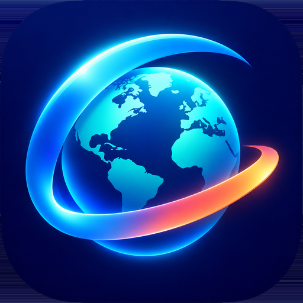

Chougmium
Chromium 150, running locally on jailbroken iPad 2 / iOS 9.
ARMv7 · iOS 9 · Native IPA recommended
Download native IPA (data partition)Requires AppSync and a trusted IPA installer. Install the native compatibility package for keyboard/tab repairs. Do not combine it with the rootful browser or old separate tab repair.
Alternative: rootful Cydia edition
This older mode uses the system partition. Use only if you deliberately need it.
Add rootful source in Cydiahttps://godsquantum.github.io/Chougmium-iOS/
iOS 9 HTTPS: the original trust store may reject GitHub Pages certificates. See official CA compatibility. If needed, download the packages from a modern computer and transfer them using your usual installer. Native Cydia installation from this URL is not yet verified.
Direct downloads
Rootful browser package (.deb, 51.4 MiB)
Rootful-only tab-controls repair (.deb)
Install downloaded packages with a compatible installer. Stock iOS cannot install these packages.
About this edition
Original Venetium Chromium engine, local rendering, high-resolution artwork, scoped keyboard compatibility fix and optional close-tab controls repair.
Installation verified on iPad 2 / iOS 9.3.5. Heavy websites may exceed the device's limited RAM; visual stability and site compatibility vary. Screenshots not yet captured.